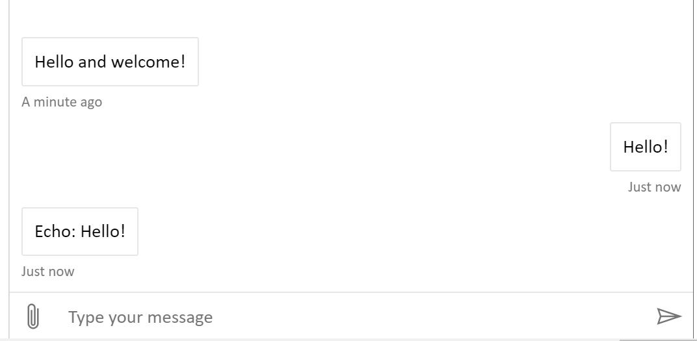

AI-100ZH-Design-Implement-Azure-AISol
实验室 3：创建基本筛选机器人
简介
每一项新技术在带来许多机遇的同时也会带来许多问题，AI 支持的技术有其独特的注意事项。 在设计和实现 AI 工具时，请注意以下 AI 道德准则：
- 公平性：在不损害尊严的情况下最大限度地提高效率
- 责任性：AI 必须对其算法负责
- 透明度：防止偏见和对人类尊严的损害
- 合乎道德的应用程序：AI 必须帮助人类，并且针对智能隐私而设计
建议深入了解生成智能应用时的道德考虑因素。
先决条件
- 请按照 Lab1-Technical_Requirements.md 中提供的指示下载 v4 Bot Framework Emulator，以便在本地测试机器人。
实验 3.0 创建 Azure Web App Bot
使用 Microsoft Bot Framework 创建的机器人可以托管在任何可公开访问的 URL 上。 出于本实验的目的，我们将使用 Azure 机器人服务注册我们的机器人。
-
导航到 Azure 门户。
-
在门户中，导航到资源组，然后选择 “+ 添加” 并搜索 “机器人”。
-
选择 “Web 应用机器人”，然后选择 “创建”。
-
对于名称，必须创建唯一标识符。我们建议使用类似 PictureBot[i][n] 的名称，其中 [i] 是你的姓名首字母缩写，[n] 是一个数字（例如，我的是 PictureBotamt6）。
-
选择一个区域
-
对于定价层，请选择 “F0（10K 高级消息）”。
-
选择 Bot 模板区域
-
选择 “C#”，然后选择 “Echo Bot”，之后我们将其更新到我们的 PictureBot。
-
单击 “确定”，确保显示 “Echo Bot”。
-
配置新的应用服务计划（将其放在机器人所在的位置）
-
可以选择打开或关闭 Application Insights。
-
请勿更改或选择 “自动创建应用 ID 和密码”，我们稍后会对此进行说明。
-
选择 “创建”
-
部署后，请导航到新的 Azure Web App Bot 资源。
-
在 “机器人管理” 下，选择 “设置”
-
选择 “Microsoft 应用 ID” 的 “管理” 链接
-
选择 “新建客户端密码”
-
对于名称，输入 PictureBot
-
对于过期，请选择 “从不”
-
选择 “添加”
-
将密码记录在记事本或类似应用中，以备日后在实验室中使用。
-
选择 “概述”，将应用程序 ID 记录到记事本或类似应用中，以备日后在实验室中使用。
-
导航回 “Web 应用机器人” 资源，在 “机器人管理” 下选择 “在网上聊天中测试” 选项卡
-
启动机器人后，探索它的功能。 如你所见，该机器人只回应你的消息。

实验 3.1：创建一个简单的机器人并运行它
-
打开 Visual Studio 2019 或更高版本
-
选择 “创建新的项目”，搜索 “机器人”。
-
向下滚动，直到看到 “Echo Bot (Bot Framework v4)”
[!警告] 以下屏幕截图可能跟你的情况有所不同，具体取决于安装的 Visual Studio 版本。 如果列出了多个适用于 Echo Bot 模板的版本，请选择“版本 3.1”，而不是版本 2.1。
-
选择 “下一步”
注意： 如果未看到 Echo Bot 模板，则需要按照必备条件中的步骤安装 Visual Studio 加载项。
-
对于名称，输入 PictureBot，然后选择 “创建”
-
花一些时间来看看通过 Echo Bot 模板所生成的所有不同的内容。我们不会花时间解释每个文件，但是我们强烈建议 稍后花一些时间执行并查看这个示例（以及其他 Web 应用机器人示例 - 基础机器人），如果你还没有这么做的话。它包含机器人开发所需的重要、有用的 shell。可以在此处找到它以及其他有用的 shell 和示例。
-
首先右键单击该解决方案，并选择 “生成”。这将还原 nuget 包。
-
打开 appsettings.json 文件，通过添加在上面记录的机器人服务信息进行更新：
{ "MicrosoftAppId": "YOURAPPID", "MicrosoftAppPassword": "YOURAPPSECRET" } -
你可能知道，重命名 Visual Studio 解决方案/项目是一项非常敏感的任务。请仔细完成以下任务，使所有名称反映 PictureBot 而不是 EchoBot：
-
右键单击 Bots/Echobot.cs 文件，然后选择 “重命名”，将类文件重命名为 “PictureBot.cs”
-
如果系统未提示你，则需要手动重命名该类，然后将对该类的所有引用更改为 PictureBot。 这样在尝试生成项目时就可以知道是否缺失该类。
-
右键单击项目，选择“管理 NuGet 包”
-
选择“浏览”选项卡并安装以下包，确保使用的是最新版本：
- Microsoft.Bot.Builder.Azure.Blobs
- Microsoft.Bot.Builder.Dialogs
- Microsoft.Bot.Builder.AI.Luis
- Microsoft.Bot.Builder.Integration.AspNet.Core
- Azure.AI.TextAnalytics
-
生成解决方案。
提示： 如果你只有一台监视器，并且希望在指令和 Visual Studio 之间轻松切换，现在可以通过右键单击“解决方案资源管理器”中的“项目”，并选择 “添加”>“现有项目” 来将指令文件添加到 Visual Studio 解决方案。导航到“Lab2”，并添加“MD 文件”类型的所有文件。
创建一个 Hello World 机器人
我们已更新基础 shell 以支持命名和将在其余实验室中使用的 NuGet 包，现在已准备好开始添加一些自定义代码。首先，我们将创建一个简单的“Hello world”机器人，它将帮助你熟悉如何使用 V4 SDK 生成机器人。
有一个重要的概念是回合，用于说明用户的消息和来自机器人的响应。
例如，如果我说“机器人你好”，并且机器人响应“嗨，你好吗？”，那就是一个回合。查看下面的图片，了解一个回合是如何在机器人应用程序的多个层中完成的。
-
打开 PictureBot.cs 文件。
-
使用下面的代码查看
OnMessageActivityAsync方法。对话的每个回合都会调用这个方法。稍后你会明白为什么这个很重要，但是现在，请记住每个回合都会调用 OnMessageActivityAsync。 -
按 F5 开始调试。
需要注意的一些事项
-
default.htm（在 wwwroot 下）页面将在浏览器中显示
-
记下网页的 localhost 端口号。这应该（并且必须）与模拟器中的终结点匹配。
-
卡住或中断？到目前为止，可以在 {GitHubPath}/code/Finished/PictureBot-Part0 下找到适用于本实验的解决方案。解决方案中的自述文件（你打开它后）将告诉你需要添加哪些密钥才能运行解决方案。
使用 Bot Framework Emulator
要与机器人互动，需要执行以下操作：
-
启动 Bot Framework Emulator（注意，我们使用的是 v4 模拟器）。 选择 “开始”，然后搜索 “机器人仿真器”。
-
在欢迎页面上，选择 “创建新的机器人配置”
-
对于名称，输入 PictureBot
-
输入机器人网页上显示的 URL
-
输入在
appsettings.json中输入的 AppId 和应用机密 -
选择 “保存并连接”，然后将 .bot 文件保存在本地
-
你现在应该能够与机器人对话。
-
键入 “hello”。该机器人将通过回应你的消息做出响应，类似于我们之前创建的 Azure 机器人。
注意： 可以选择“重启对话”以清除对话历史记录。
在日志中，你应该可以看到如下这类内容：

请注意它对我们将跳过 ngrok 以获取本地地址的描述。我们不会在本研讨会中使用 ngrok，但如果我们连接到已发布版本的机器人，我们会通过“生产”终结点来执行这个操作。打开“生产”终结点，观察不同环境中机器人之间的区别。在测试开发机器人并将它与生产机器人进行比较时，这可能是一个有用的功能。
可在此处阅读关于使用模拟器的详细信息。
-
浏览并检查示例机器人代码。特别之处在于：
-
Startup.cs：是我们将添加服务/中间件并配置 HTTP 请求管道的位置。其中有很多注释可以帮助你了解正在进行的操作。请花几分钟阅读。
-
PictureBot.cs：
OnMessageActivityAsync方法是等待来自用户的消息的入口点，我们可以在收到消息后在此对消息做出响应并等待进一步的消息。 我们可以使用turnContext.SendActivityAsync将来自机器人的消息发送回给用户。
-
实验 3.2： 管理状态和服务
-
再次导航到 Startup.cs 文件
-
通过添加以下内容来更新
using语句列表：using System; using System.Linq; using System.Text.RegularExpressions; using Microsoft.Bot.Builder.Integration; using Microsoft.Bot.Configuration; using Microsoft.Bot.Connector.Authentication; using Microsoft.Extensions.Options; using Microsoft.Extensions.Logging; using PictureBot.Bots; using Microsoft.Bot.Builder.AI.Luis; using Microsoft.Bot.Builder.Dialogs; using Microsoft.Bot.Builder.Azure.Blobs;我们暂时不会使用上述所有命名空间，但你可以猜一猜我们什么时候会用？
-
在 Startup.cs 类中，重点关注
ConfigureServices方法，该方法用于向机器人添加服务。请仔细查看内容，注意内置内容。有助于加深理解的一些其他注释：
- 如果你不熟悉依赖关系注入，可以在此阅读更多相关信息。
- 出于本实验和测试目的，可以使用本地内存。对于生产，必须实现一种管理状态数据的方式。在
ConfigureServices中的大量注释中，有一些相关提示。 - 在方法的底部，你可能会注意到我们会创建并注册状态访问器。管理状态是创建智能机器人的关键，可以在此阅读详细信息。
幸运的是，这个 shell 非常全面，因此我们只需添加两个项目：
- 中间件
- 自定义状态访问器。
中间件
中间件是位于适配器和机器人逻辑之间的一个类或一组类，在初始化期间添加到适配器的中间件集合中。
通过 SDK，可以编写你自己的中间件或添加由其他人创建的中间件的可重用组件。进出机器人的每个活动都会经过中间件。我们稍后会在实验中进行深入了解，但是现在，请务必了解每个活动都会经过中间件，因为它位于运行时调用的 ConfigureServices 方法中（该方法在由用户发送的每条消息和 OnMessageActivityAsync 之间运行）。
-
添加名为 “中间件” 的新文件夹
-
右键单击 “中间件” 文件夹并选择 “添加”>“现有项”。
-
导航到 {GitHubDir}\Lab3-Basic_Filter_Bot\code\Middleware，全选三个文件，然后选择 “添加”
-
将以下变量添加到 Startup 类：
private ILoggerFactory _loggerFactory; -
替换 ConfigureServices 方法中的以下代码：
services.AddTransient<IBot, PictureBot>();替换为以下代码：
services.AddBot<PictureBot.Bots.PictureBot>(options => { var appId = Configuration.GetSection("MicrosoftAppId")?.Value; var appSecret = Configuration.GetSection("MicrosoftAppPassword")?.Value; options.CredentialProvider = new SimpleCredentialProvider(appId, appSecret); // Creates a logger for the application to use. ILogger logger = _loggerFactory.CreateLogger<PictureBot.Bots.PictureBot>(); // Catches any errors that occur during a conversation turn and logs them. options.OnTurnError = async (context, exception) => { logger.LogError($"Exception caught : {exception}"); await context.SendActivityAsync("Sorry, it looks like something went wrong."); }; var middleware = options.Middleware; // Add middleware below with "middleware.Add(...." // Add Regex below }); -
将 Configure方法替换为以下代码：
public void Configure(IApplicationBuilder app, ILoggerFactory loggerFactory) { _loggerFactory = loggerFactory; app.UseDefaultFiles() .UseBotFramework() .UseStaticFiles() .UseWebSockets() .UseRouting() .UseAuthorization() .UseEndpoints(endpoints => { endpoints.MapControllers(); }); }
自定义状态访问器
在我们讨论需要的自定义状态访问器之前，请务必备份。我们将在下一部分中正式介绍对话框，它们是实现多回合对话逻辑的一种方法，这意味着它们需要依赖持续状态来了解用户在对话中的位置。在基于对话框的机器人中，我们将使用 DialogSet 来保存各种对话框。DialogSet 是使用名为“访问器”的对象的句柄创建的。
在 SDK 中，访问器实现 IStatePropertyAccessor接口，这基本上意味着它提供了获取、设置和删除有关状态的信息的功能，因此我们可以跟踪用户在对话中位于哪个步骤。
-
对于我们创建的每个访问器，我们必须先为它赋予一个属性名称。对于我们的场景，我们想要跟踪一些内容：
PictureState- 我们问候用户了吗？
- 我们不想多次问候用户，但我们希望确保在对话开始时问候他们。
- 用户当前是否正在搜索特定的词？如果是，这个词是什么？
- 我们需要跟踪用户是否已告知我们他们想要搜索的内容，以及搜索内容是什么（如果他们想要搜索）。
- 我们问候用户了吗？
DialogState- 用户当前是否正在进行对话？
- 我们将用它来确定用户在给定对话或对话流中的位置。如果你不熟悉对话框，请不要担心，我们很快就会对此进行介绍。
- 用户当前是否正在进行对话？
我们可以使用这些构造函数来跟踪我们称之为
PictureState的内容。 -
在 Startup.cs 文件的 ConfigureServices 方法中，在自定义状态访问器列表中添加
PictureState并跟踪对话框，你将使用内置的DialogState：// Create and register state accesssors. // Acessors created here are passed into the IBot-derived class on every turn. services.AddSingleton<PictureBotAccessors>(sp => { var options = sp.GetRequiredService<IOptions<BotFrameworkOptions>>().Value; if (options == null) { throw new InvalidOperationException("BotFrameworkOptions must be configured prior to setting up the state accessors"); } var conversationState = sp.GetRequiredService<ConversationState>(); //var conversationState = services.BuildServiceProvider().GetService<ConversationState>(); if (conversationState == null) { throw new InvalidOperationException("ConversationState must be defined and added before adding conversation-scoped state accessors."); } // Create the custom state accessor. // State accessors enable other components to read and write individual properties of state. return new PictureBotAccessors(conversationState) { PictureState = conversationState.CreateProperty<PictureState>(PictureBotAccessors.PictureStateName), DialogStateAccessor = conversationState.CreateProperty<DialogState>("DialogState"), }; }); -
你应该可以在某些术语下面看到错误（红色波浪线）。但在修复它们之前，你可能想知道为什么我们必须创建两个访问器，为什么一个不够？
-
DialogState是来自Microsoft.Bot.Builder.Dialogs库的特定访问器。发送消息时，对话框子系统将调用DialogSet上的CreateContext。跟踪这个上下文需要DialogState访问器来专门获取相应的对话框状态 JSON。 -
另一方面，
PictureState将用于跟踪我们在整个对话中指定的特定对话属性（例如，我们是否已问候用户？）
现在不要担心对话术语，但这个过程应该有意义。如果你感到疑惑，可以深入了解状态的运作方式。
-
-
现在回到你看到的错误。你已经说过要存储这些信息，但是你还未说明存储位置或方式。我们必须更新“PictureState.cs”和“PictureBotAccessor.cs”才能拥有和访问我们想要存储的信息。
-
右键单击项目，然后选择 “添加”->“类”，选择类文件并将其命名为 PictureState
-
将以下代码复制到 PictureState.cs。
using System.Collections.Generic; namespace Microsoft.PictureBot { /// <summary> /// Stores counter state for the conversation. /// Stored in <see cref="Microsoft.Bot.Builder.ConversationState"/> and /// backed by <see cref="Microsoft.Bot.Builder.MemoryStorage"/>. /// </summary> public class PictureState { /// <summary> /// Gets or sets the number of turns in the conversation. /// </summary> /// <value>The number of turns in the conversation.</value> public string Greeted { get; set; } = "not greeted"; public string Search { get; set; } = ""; public string Searching { get; set; } = "no"; } } -
查看代码。 我们在这里存储关于活动对话的信息。 可随时添加一些解释字符串用途的注释。正确初始化 PictureState 之后，可以创建 PictureBotAccessor，以删除在 Startup.cs中遇到的错误。
-
右键单击项目，然后选择 “添加”->“类”，选择类文件并将其命名为 PictureBotAccessors
-
将以下内容复制到其中：
using System; using Microsoft.Bot.Builder; using Microsoft.Bot.Builder.Dialogs; namespace Microsoft.PictureBot { /// <summary> /// This class is created as a Singleton and passed into the IBot-derived constructor. /// - See <see cref="PictureBot"/> constructor for how that is injected. /// - See the Startup.cs file for more details on creating the Singleton that gets /// injected into the constructor. /// </summary> public class PictureBotAccessors { /// <summary> /// Initializes a new instance of the <see cref="PictureBotAccessors"/> class. /// Contains the <see cref="ConversationState"/> and associated <see cref="IStatePropertyAccessor{T}"/>. /// </summary> /// <param name="conversationState">The state object that stores the counter.</param> public PictureBotAccessors(ConversationState conversationState) { ConversationState = conversationState ?? throw new ArgumentNullException(nameof(conversationState)); } /// <summary> /// Gets the <see cref="IStatePropertyAccessor{T}"/> name used for the <see cref="CounterState"/> accessor. /// </summary> /// <remarks>Accessors require a unique name.</remarks> /// <value>The accessor name for the counter accessor.</value> public static string PictureStateName { get; } = $"{nameof(PictureBotAccessors)}.PictureState"; /// <summary> /// Gets or sets the <see cref="IStatePropertyAccessor{T}"/> for CounterState. /// </summary> /// <value> /// The accessor stores the turn count for the conversation. /// </value> public IStatePropertyAccessor<PictureState> PictureState { get; set; } /// <summary> /// Gets the <see cref="ConversationState"/> object for the conversation. /// </summary> /// <value>The <see cref="ConversationState"/> object.</value> public ConversationState ConversationState { get; } /// <summary> Gets the IStatePropertyAccessor{T} name used for the DialogState accessor. </summary> public static string DialogStateName { get; } = $"{nameof(PictureBotAccessors)}.DialogState"; /// <summary> Gets or sets the IStatePropertyAccessor{T} for DialogState. </summary> public IStatePropertyAccessor<DialogState> DialogStateAccessor { get; set; } } } -
查看代码，注意
PictureStateName和PictureState的实现。 -
想知道你是否已正确对它进行配置？返回 Startup.cs 并确认已解决有关创建自定义状态访问器的错误。
实验 3.3：为机器人组织代码
有许多用于开发机器人的不同方法和首选项。通过 SDK，可以采用任何方式组织代码。在这些实验室中，我们将对话整理到不同的对话框中，并且将探索一种围绕对话的组织代码的 MVVM 样式。
这个 PictureBot 将按以下方式组织：
- 对话框 - 用于编辑模型的业务逻辑
- 响应 - 定义面向用户的输出的类
- 模型 - 要修改的对象
右键单击项目并选择 “添加”->“新建文件夹”，在项目中创建两个新的文件夹“Responses”和“Models”
对话框
你可能已经熟悉对话框及其工作方式。如果你不熟悉，请阅读关于对话框的这个页面，然后再继续。
如果机器人能够执行多个任务，最好有多个对话框或一组对话框，以帮助用户浏览不同的对话流。对于 PictureBot，我们希望用户能够浏览初始菜单流（通常称为主对话框），然后分散到不同的对话框，具体取决于他们尝试进行的操作 - 搜索图片、分享图片、订购图片，或获取帮助。我们可以通过使用对话框容器或这里称为 DialogSet 的方式轻松完成此操作。请阅读关于如何创建模块化机器人逻辑和复杂对话框的内容，然后再继续。
对于本实验室，我们将一切从简，但之后，你应该能够创建包含许多对话框的对话框集。对于 PictureBot，我们将有两个主对话框：
-
MainDialog - 机器人启动时使用的默认对话框。这个对话框将根据用户请求启动其他对话框。作为对话框集的主对话框，这个对话框将负责创建对话框容器，并根据需要将用户重定向到其他对话框。
-
SearchDialog - 一个对话框，用于管理处理搜索请求并将那些结果返回给用户。 注意： 我们将调用这个功能，但不会在本研讨会中实施搜索。
由于我们只有两个对话框，因此可以保持简单，并将它们放在 PictureBot 类中。但是，在复杂的场景中，可能需要将它们拆分到一个文件夹的不同对话框中（类似于我们分离“响应”和“模型”那样）。
-
导航回 PictureBot.cs 并用以下内容替换
using语句：using System.Collections.Generic; using System.Threading; using System.Threading.Tasks; using Microsoft.Bot.Builder; using Microsoft.Bot.Builder.Dialogs; using Microsoft.Bot.Schema; using Microsoft.PictureBot; using PictureBot.Responses;
你刚刚添加了对模型/响应以及对服务 LUIS 和 Azure 认知搜索的访问权限。最后，Newtonsoft 引用将帮助你分析来自 LUIS 的响应，我们将在后续实验室中看到它。
接下来，我们需要将 OnTurnAsync 方法替换为具有以下功能的方法：处理传入的邮件，然后将邮件路由到各种对话框中。
-
将 PictureBot 类替换为以下代码：
/// <summary> /// Represents a bot that processes incoming activities. /// For each user interaction, an instance of this class is created and the OnTurnAsync method is called. /// This is a Transient lifetime service. Transient lifetime services are created /// each time they're requested. For each Activity received, a new instance of this /// class is created. Objects that are expensive to construct, or have a lifetime /// beyond the single turn, should be carefully managed. /// For example, the <see cref="MemoryStorage"/> object and associated /// <see cref="IStatePropertyAccessor{T}"/> object are created with a singleton lifetime. /// </summary> /// <seealso cref="https://docs.microsoft.com/en-us/aspnet/core/fundamentals/dependency-injection?view=aspnetcore-2.1"/> /// <summary>Contains the set of dialogs and prompts for the picture bot.</summary> public class PictureBot : ActivityHandler { private readonly PictureBotAccessors _accessors; // Initialize LUIS Recognizer private readonly ILogger _logger; private DialogSet _dialogs; /// <summary> /// Every conversation turn for our PictureBot will call this method. /// There are no dialogs used, since it's "single turn" processing, meaning a single /// request and response. Later, when we add Dialogs, we'll have to navigate through this method. /// </summary> /// <param name="turnContext">A <see cref="ITurnContext"/> containing all the data needed /// for processing this conversation turn. </param> /// <param name="cancellationToken">(Optional) A <see cref="CancellationToken"/> that can be used by other objects /// or threads to receive notice of cancellation.</param> /// <returns>A <see cref="Task"/> that represents the work queued to execute.</returns> /// <seealso cref="BotStateSet"/> /// <seealso cref="ConversationState"/> /// <seealso cref="IMiddleware"/> public override async Task OnTurnAsync(ITurnContext turnContext, CancellationToken cancellationToken = default(CancellationToken)) { if (turnContext.Activity.Type is "message") { // Establish dialog context from the conversation state. var dc = await _dialogs.CreateContextAsync(turnContext); // Continue any current dialog. var results = await dc.ContinueDialogAsync(cancellationToken); // Every turn sends a response, so if no response was sent, // then there no dialog is currently active. if (!turnContext.Responded) { // Start the main dialog await dc.BeginDialogAsync("mainDialog", null, cancellationToken); } } } /// <summary> /// Initializes a new instance of the <see cref="PictureBot"/> class. /// </summary> /// <param name="accessors">A class containing <see cref="IStatePropertyAccessor{T}"/> used to manage state.</param> /// <param name="loggerFactory">A <see cref="ILoggerFactory"/> that is hooked to the Azure App Service provider.</param> /// <seealso cref="https://docs.microsoft.com/en-us/aspnet/core/fundamentals/logging/?view=aspnetcore-2.1#windows-eventlog-provider"/> public PictureBot(PictureBotAccessors accessors, ILoggerFactory loggerFactory /*, LuisRecognizer recognizer*/) { if (loggerFactory == null) { throw new System.ArgumentNullException(nameof(loggerFactory)); } // Add instance of LUIS Recognizer _logger = loggerFactory.CreateLogger<PictureBot>(); _logger.LogTrace("PictureBot turn start."); _accessors = accessors ?? throw new System.ArgumentNullException(nameof(accessors)); // The DialogSet needs a DialogState accessor, it will call it when it has a turn context. _dialogs = new DialogSet(_accessors.DialogStateAccessor); // This array defines how the Waterfall will execute. // We can define the different dialogs and their steps here // allowing for overlap as needed. In this case, it's fairly simple // but in more complex scenarios, you may want to separate out the different // dialogs into different files. var main_waterfallsteps = new WaterfallStep[] { GreetingAsync, MainMenuAsync, }; var search_waterfallsteps = new WaterfallStep[] { // Add SearchDialog water fall steps }; // Add named dialogs to the DialogSet. These names are saved in the dialog state. _dialogs.Add(new WaterfallDialog("mainDialog", main_waterfallsteps)); _dialogs.Add(new WaterfallDialog("searchDialog", search_waterfallsteps)); // The following line allows us to use a prompt within the dialogs _dialogs.Add(new TextPrompt("searchPrompt")); } // Add MainDialog-related tasks // Add SearchDialog-related tasks // Add search related tasks } -
花一些时间与研讨会参与者一起回顾和讨论这个 shell。在继续之前，你应该了解每一行的用途。
-
我们稍后会对这个内容进行补充。现可忽略任何错误。
响应
所以在填写对话框之前，我们需要准备一些响应。请记住，我们将把对话框和响应分开，因为这样会产生更简洁的代码，并且更易于遵循对话框的逻辑。如果你现在不同意或不理解，相信你很快就会同意和理解。
-
在 “响应” 文件夹中，创建两个类，分别称为 MainResponses.cs 和 SearchResponses.cs。你可能已经明白，响应文件将只包含我们想要发送给用户的不同输出，而不是逻辑。
-
在 MainResponses.cs 中将代码替换为以下代码：
using System.Threading.Tasks; using Microsoft.Bot.Builder; namespace PictureBot.Responses { public class MainResponses { public static async Task ReplyWithGreeting(ITurnContext context) { await context.SendActivityAsync("Hello, Im a Picture Bot"); } public static async Task ReplyWithHelp(ITurnContext context) { await context.SendActivityAsync($"I can search for pictures, share pictures and order prints of pictures."); } public static async Task ReplyWithResumeTopic(ITurnContext context) { await context.SendActivityAsync($"What can I do for you?"); } public static async Task ReplyWithConfused(ITurnContext context) { // Add a response for the user if Regex or LUIS doesn't know // What the user is trying to communicate await context.SendActivityAsync($"I'm sorry, I don't understand."); } public static async Task ReplyWithLuisScore(ITurnContext context, string key, double score) { await context.SendActivityAsync($"Intent: {key} ({score})."); } public static async Task ReplyWithShareConfirmation(ITurnContext context) { await context.SendActivityAsync($"Posting your picture(s) on twitter..."); } public static async Task ReplyWithOrderConfirmation(ITurnContext context) { await context.SendActivityAsync($"Ordering standard prints of your picture(s)..."); } public static async Task ReplyWithSearchConfirmation(ITurnContext context) { await context.SendActivityAsync($"Searching picture(s)..."); } } }请注意，有两个不包含值的响应（ReplyWithGreeting 和 ReplyWithConfused）。根据需要填写这些内容。
-
在“SearchResponses.cs”中，将代码替换为以下代码：
using Microsoft.Bot.Builder; using System; using System.Collections.Generic; using System.Linq; using System.Threading.Tasks; using Microsoft.Bot.Schema; namespace PictureBot.Responses { public class SearchResponses { // add a task called "ReplyWithSearchRequest" // it should take in the context and ask the // user what they want to search for public static async Task ReplyWithSearchConfirmation(ITurnContext context, string utterance) { await context.SendActivityAsync($"Ok, searching for pictures of {utterance}"); } public static async Task ReplyWithNoResults(ITurnContext context, string utterance) { await context.SendActivityAsync("There were no results found for \"" + utterance + "\"."); } } } -
请注意，这里缺少一个完整的任务。根据需要填写，但请确保新任务的名称为“ReplyWithSearchRequest”，否则你之后可能会遇到问题。
模型
由于时间限制，我们不会介绍如何创建所有模型。它们很简单，但我们建议你在添加代码后花些时间进行评审。
-
右键单击 “模型” 文件夹并选择 “添加”>“现有项目”。
-
导航到 {GitHubDir}\Lab3-Basic_Filter_Bot\code\Models，全选三个文件，然后选择 “添加”。
实验 3.4：Regex 和中间件
我们可以通过很多操作来改进机器人。首先，我们可能不想通过调用 LUIS 来获取简单的“搜索图片”消息，机器人将经常从其用户那里获得这个消息。 一个简单的正则表达式可以满足此需求，并节省我们的时间（由于网络延迟）和费用（调用 LUIS 服务产生的费用）。
此外，随着我们机器人复杂程度的加深，我们将接受用户的输入并使用多种服务来解释它，因此，我们需要一个过程来管理此流。 例如，先尝试正则表达式，如果不匹配，则调用 LUIS，然后还可以下拉菜单尝试其他服务，例如 QnA Maker 或 Azure 认知搜索。管理这个流的好方法是借助 Middleware，SDK 可为这方面提供出色支持。
在继续进行实验室之前，请了解有关中间件和 Bot Framework SDK 的详细信息：
最终，我们将使用一些中间件来尝试先理解用户使用正则表达式 (Regex) 所说的内容，如果不能理解，我们将调用 LUIS。如果仍然不能理解，我们将继续并采用通用回复“I’m not sure what you mean”或者你为“ReplyWithConfused”设置的任何内容。
-
在 Startup.cs的
ConfigureServices中的“添加以下 Regex”注释下，添加以下内容：middleware.Add(new RegExpRecognizerMiddleware() .AddIntent("search", new Regex("search picture(?:s)*(.*)|search pic(?:s)*(.*)", RegexOptions.IgnoreCase)) .AddIntent("share", new Regex("share picture(?:s)*(.*)|share pic(?:s)*(.*)", RegexOptions.IgnoreCase)) .AddIntent("order", new Regex("order picture(?:s)*(.*)|order print(?:s)*(.*)|order pic(?:s)*(.*)", RegexOptions.IgnoreCase)) .AddIntent("help", new Regex("help(.*)", RegexOptions.IgnoreCase)));我们实际上只是粗略了解了如何使用正则表达式。如果你有兴趣，可以在此处了解详细信息。
-
你可能会注意到
options.State已被弃用。 接下来改用最新方法： -
删除以下代码：
var conversationState = new ConversationState(dataStore); options.State.Add(conversationState); -
在
ConfigureServices底部添加以下代码// Create the User state. services.AddSingleton<UserState>(sp => { var dataStore = sp.GetRequiredService<IStorage>(); return new UserState(dataStore); }); // Create the Conversation state. services.AddSingleton<ConversationState>(sp => { var dataStore = sp.GetRequiredService<IStorage>(); return new ConversationState(dataStore); }); // Create the IStorage. services.AddSingleton<IStorage, MemoryStorage>(sp => { return new MemoryStorage(); }); -
如果没有添加 LUIS，我们的机器人实际上只会获取一些变体，但如果用户使用机器人搜索、共享和订购图片，它应该会捕获许多消息。
题外话：有人可能会争论说，用户应该不必键入“help”即可获得一个清楚明了的选项菜单，其中包含机器人可以执行的操作；更确切地说，这应该是第一次接触机器人时的默认体验。可发现性是机器人面临的最大挑战之一 - 让用户了解机器人能够做什么。 优秀的机器人设计原则可能有所帮助。
实验室 3.5：运行机器人
再次介绍 MainDialog
现在开始进入正题。我们需要在 PictureBot.cs 中填写 MainDialog，以便我们的机器人可以对用户所说的要做的事情做出反应。根据 Regex 的结果，我们需要将对话指向正确的方向。仔细阅读代码，确认了解代码的作用。
-
在 PictureBot.cs 中，将以下命名空间添加到文件顶部
using Microsoft.Bot.Schema; using Microsoft.PictureBot; using PictureBot.Responses; -
将以下行添加到类的顶部。
private readonly PictureBotAccessors _accessors; -
通过粘贴代码来添加以下方法：
// If we haven't greeted a user yet, we want to do that first, but for the rest of the // conversation we want to remember that we've already greeted them. private async Task<DialogTurnResult> GreetingAsync(WaterfallStepContext stepContext, CancellationToken cancellationToken) { // Get the state for the current step in the conversation var state = await _accessors.PictureState.GetAsync(stepContext.Context, () => new PictureState()); // If we haven't greeted the user if (state.Greeted == "not greeted") { // Greet the user await MainResponses.ReplyWithGreeting(stepContext.Context); // Update the GreetedState to greeted state.Greeted = "greeted"; // Save the new greeted state into the conversation state // This is to ensure in future turns we do not greet the user again await _accessors.ConversationState.SaveChangesAsync(stepContext.Context); // Ask the user what they want to do next await MainResponses.ReplyWithHelp(stepContext.Context); // Since we aren't explicitly prompting the user in this step, we'll end the dialog // When the user replies, since state is maintained, the else clause will move them // to the next waterfall step return await stepContext.EndDialogAsync(); } else // We've already greeted the user { // Move to the next waterfall step, which is MainMenuAsync return await stepContext.NextAsync(); } } // This step routes the user to different dialogs // In this case, there's only one other dialog, so it is more simple, // but in more complex scenarios you can go off to other dialogs in a similar public async Task<DialogTurnResult> MainMenuAsync(WaterfallStepContext stepContext, CancellationToken cancellationToken) { // Check if we are currently processing a user's search var state = await _accessors.PictureState.GetAsync(stepContext.Context); // If Regex picks up on anything, store it var recognizedIntents = stepContext.Context.TurnState.Get<IRecognizedIntents>(); // Based on the recognized intent, direct the conversation switch (recognizedIntents.TopIntent?.Name) { case "search": // switch to the search dialog return await stepContext.BeginDialogAsync("searchDialog", null, cancellationToken); case "share": // respond that you're sharing the photo await MainResponses.ReplyWithShareConfirmation(stepContext.Context); return await stepContext.EndDialogAsync(); case "order": // respond that you're ordering await MainResponses.ReplyWithOrderConfirmation(stepContext.Context); return await stepContext.EndDialogAsync(); case "help": // show help await MainResponses.ReplyWithHelp(stepContext.Context); return await stepContext.EndDialogAsync(); default: { await MainResponses.ReplyWithConfused(stepContext.Context); return await stepContext.EndDialogAsync(); } } } -
找到函数
OnMessageActivityAsync，并替换为新函数OnTurnAsyncpublic override async Task OnTurnAsync(ITurnContext turnContext, CancellationToken cancellationToken = default(CancellationToken)) { if (turnContext.Activity.Type is "message") { // Establish dialog context from the conversation state. var dc = await _dialogs.CreateContextAsync(turnContext); // Continue any current dialog. var results = await dc.ContinueDialogAsync(cancellationToken); // Every turn sends a response, so if no response was sent, // then there no dialog is currently active. if (!turnContext.Responded) { // Start the main dialog await dc.BeginDialogAsync("mainDialog", null, cancellationToken); } } } -
按 F5 键运行机器人。
-
使用机器人模拟器并发送一些命令来测试机器人：
- 帮助
- 共享图片
- 整理图片
- 搜索图片
注意： 如果机器人出现 500 错误，则可以在 Startup.cs文件的 OnTurnError 委托方法中放置一个断点。 最常见的错误是 AppId 和 AppSecret 不匹配。
-
如果唯一没有提供预期结果的命令是“search pics”，那么一切都是按照你的配置方式运行的。“search pics”失败目前是本实验室的预期行为，但这是为什么呢？请在继续之前提供一个答案！
提示：从 PictureBot.cs 开始，使用断点跟踪与情况“搜索”的匹配。 卡住或中断？到目前为止，可以在 resources/code/Finished 下找到适用于本实验的解决方案。解决方案中的自述文件（你打开它后）将告诉你需要添加哪些密钥才能运行解决方案。建议使用此代码作为参考，而不是作为解决方案运行，但如果选择运行此代码，请务必为你的环境添加必需的密钥。